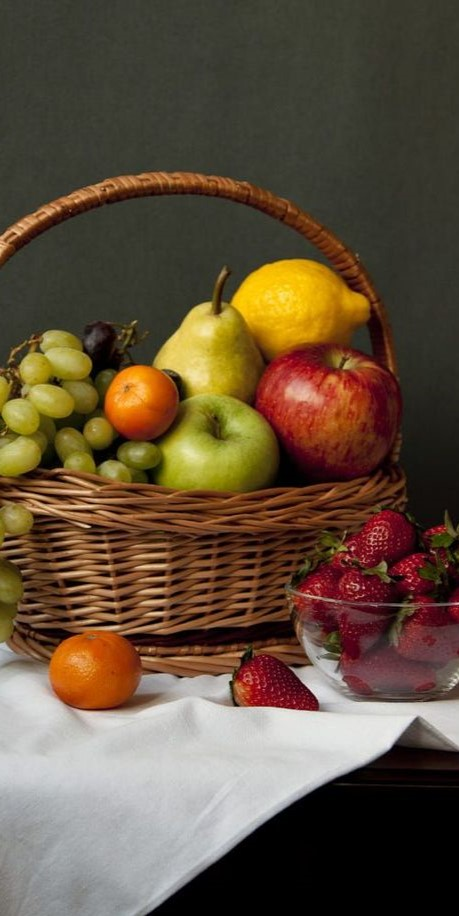
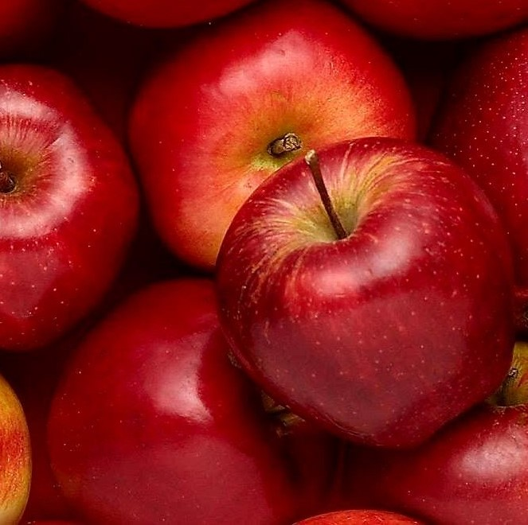
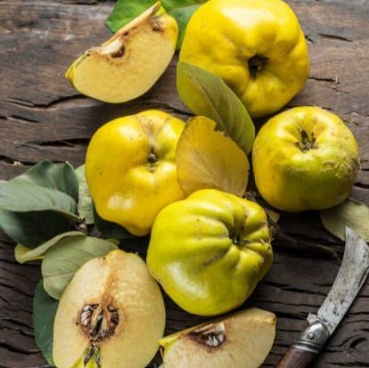

|  |  |  | ||
| 사과 기운 보완 ㅣ 심기를 더함 ㅣ 비를 조화롭게 함 ㅣ 변비예방 ㅣ 당뇨병 예방 ㅣ 동맥 경화 예방 ㅣ 빈혈 회복 ㅣ 피로회복에 도움 ㅣ 뇌졸중 위험 감소 ㅣ 콜레스테롤 감소 ㅣ |
배 ㅣ 이자 가슴 답답함 해소 ㅣ 갈증에 좋음 ㅣ 기관지염으로 인한 감기 발열에 효과적 ㅣ 객열을 없앰 ㅣ 인후통 감소 효과 ㅣ 숙취 해소 ㅣ 감기 예방 ㅣ 소화 촉진 ㅣ 많은 식이섬유 함유 ㅣ |
단호박 시력 보호 ㅣ 피부 노화 방지 ㅣ 면역력 향상 ㅣ 장 운동 촉진 ㅣ 기관지 염증 억제 ㅣ 혈관 질환 예방 ㅣ 당뇨병 예방 ㅣ 노화 억제 ㅣ 성인병 예방 ㅣ 스트레스 해소 ㅣ |
모과 근육경련 해소 ㅣ 호흡기 질환에 효과적 ㅣ 소화 기능 개선 ㅣ 관절염 개선 ㅣ 피로회복 ㅣ 신진대사 개선 ㅣ 각기병 완화에 도움 ㅣ 갈증 해소 ㅣ |